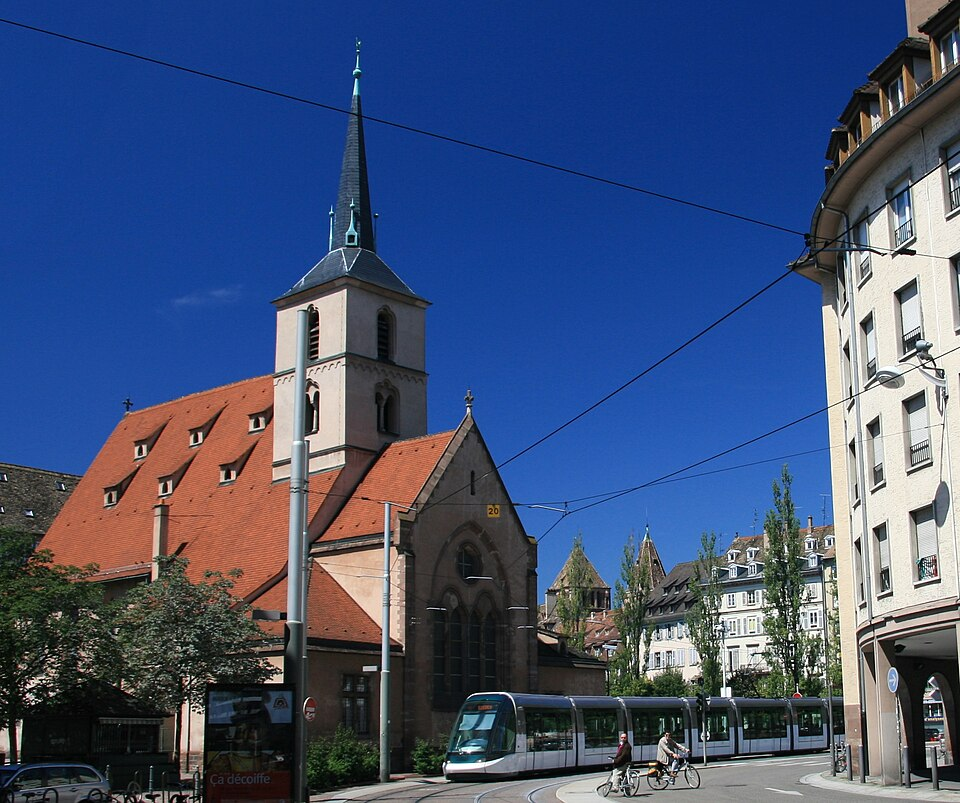

Les transports
Les voitures à essence sont interdites. On se déplace à pied, à vélo ou en tramway.
Le tramway
Le tramway électrique passe toutes les trois minutes. Il fonctionne grâce à l'énergie solaire et éolienne de la ville.

Les voitures à essence sont interdites. On se déplace à pied, à vélo ou en tramway.
Le tramway électrique passe toutes les trois minutes. Il fonctionne grâce à l'énergie solaire et éolienne de la ville.
